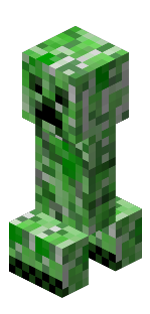

Creeper
La criatura explosiva
El Creeper es una de las criaturas más icónicas de Minecraft. Se acerca sigilosamente a los jugadores y explota al estar cerca, causando daño considerable y destruyendo bloques cercanos.
Tipo
Hostil
Salud
❤️ ❤️ ❤️ ❤️ ❤️ ❤️
Daño
Alto
Hábitat
Superficies, cuevas
Caída de objetos
Pólvora